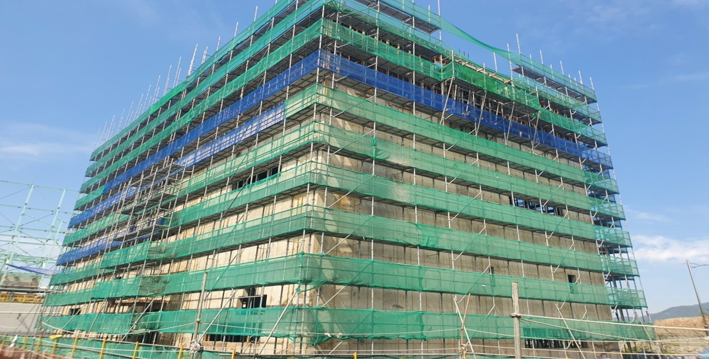
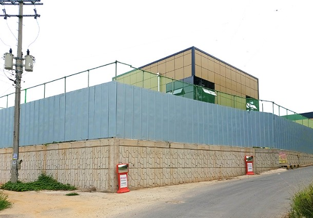
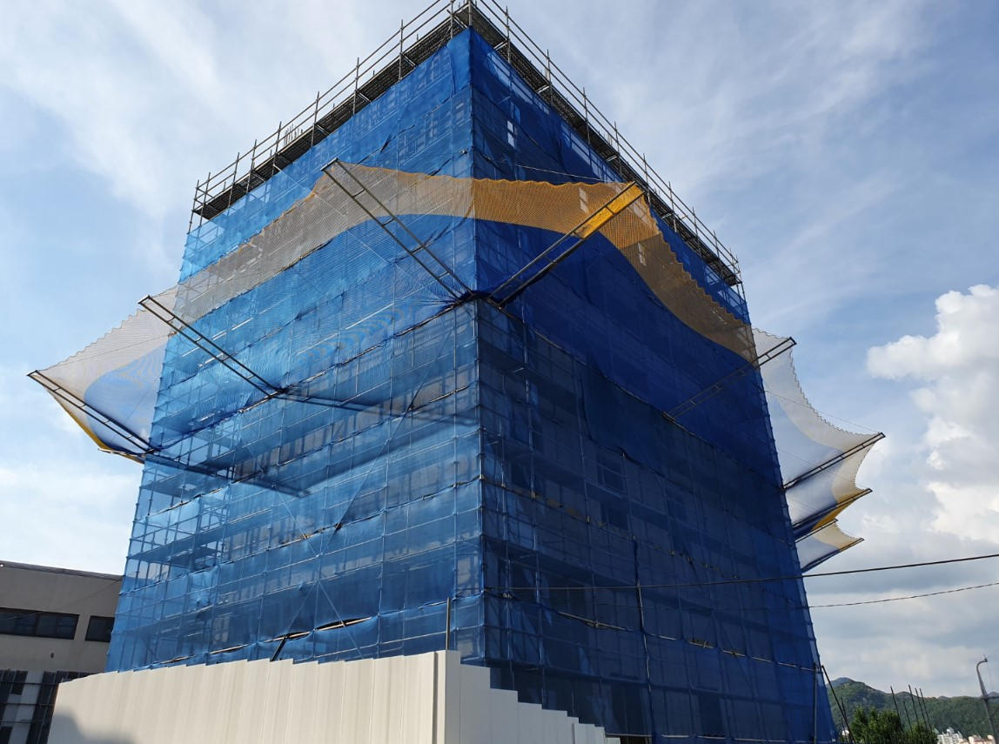
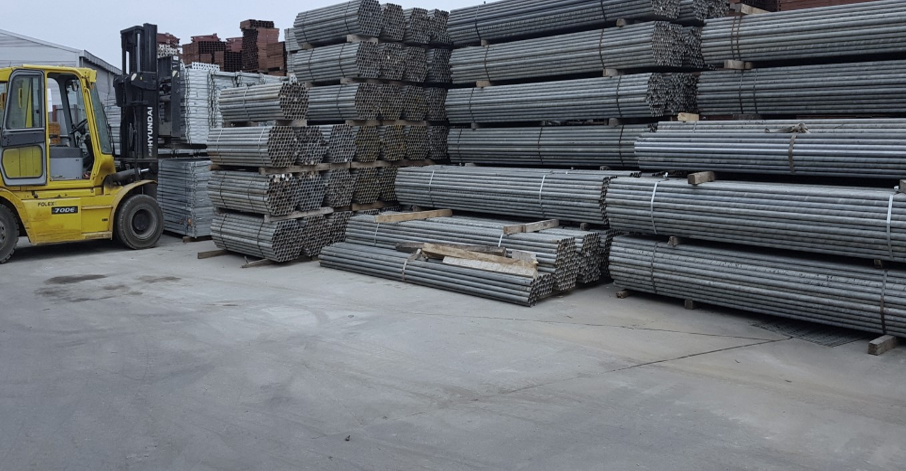

사업분야
강관 비계 | 시스템 비계
설치 / 해체
특징
건설 현장의내, 외벽 추가 공사를 돕는 비계 기능을 기하학적으로 조립한 공사로, 대상
구조물을 주변으로 부터
완전히 차단 격리합니다.
용도
드라이비트공사 | 석 공사 | 인테리어 공사 | 페인트 공사 | 조경, 전기 공사 | 무대,
이벤트 시설
종류
강관 비계 | 시스템 비계
- 강관 비계(쌍줄비계, 수평 비계, 달 비계)
임의로 현장 상황에 맞추어 설치할 수 있어 설치공간에 대한 제약이 적어 다양한 공간에서
활용할 수 있습니다.
- 시스템 비계 (ES700)
구조계산과 도면작업을 통하여 규격화되어 설치됩니다. 빠른 시공에 효과적이며 강관 비계에
비해 상대적으로 안정성이 높습니다.

- 강관 비계(쌍줄비계, 수평 비계, 달 비계)
임의로 현장 상황에 맞추어 설치할 수 있어 설치공간에 대한 제약이 적어 다양한 공간에서 활용할 수 있습니다.
- 시스템 비계 (ES700)
구조계산과 도면작업을 통하여 규격화되어 설치됩니다. 빠른 시공에 효과적이며 강관 비계에 비해 상대적으로 안정성이 높습니다.

건설용 가설휀스
건설용 가설휀스
설치 / 해체 /
특징
공사 현장에서 발생하는 비산먼지,소음을 차단하고 보행자 보호 및 통행 안전을 확보하여
사고를 방지 하기 위해 설치되는 가설 울타리 입니다. 설치,시공이 간단하고 견고하며 용도에맞게
응용 조립,제작,설치가 용이하여 가장 널 이용되고있는 휀스입니다.
용도
공사 현장의 비산먼지, | 소음 차단 | 공사 현장 대지 경계 | 작업장 안전 확보 |
보행자 통행 안전 확보 | 가설 담장 | 아파트 현장 | 공사 현장,먼지 소음으로 인한 시민 민원 예방|
종류
너비 530mm | 높이 1800mm~3000mm | 두께 0.5T ~ 1.0T
소재 전기아연도금강판
소재 전기아연도금강판
플라잉넷 | 방호선반
설치 / 해체
특징
건설 현장 외벽 으로부터 사물의 낙하 및 사람의 추락 으로 인한 재해 위험을
방지하기위하여 산업안전보건기준에 근거하여 높이 10M 이상의 신축건축물에
설치하여야 하는 망형태의 안전시설물 입니다.
용도
10M 이상높이에서의 추락및 낙하 방지
종류
플라잉 넷(F/N) | 시스템 넷(S/N)
설치기준
- 망부분은 가설기자재 성능점검 합격품을 사용한다.
- 높이 10M 이내 간격으로 건축물 또는 비계외측에 설치.
- 내민 길이는 벽면으로부터 2M 이상 돌출.
- 방호망의 수평면 각도는 지면으로부터 20도~30도

설치기준
- 망부분은 가설기자재 성능점검 합격품을 사용한다.- 높이 10M 이내 간격으로 건축물 또는 비계외측에 설치.
- 내민 길이는 벽면으로부터 2M 이상 돌출.
- 방호망의 수평면 각도는 지면으로부터 20도~30도

자재 임대 / 판매